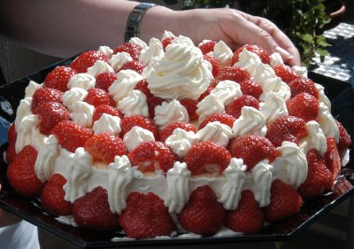

| Zutaten für 6 Personen: | |
| 4 | Eier |
| 100 g | Zucker oder |
| 3 TL | Assugrin flüssig |
| 250 g | Rahmquark |
| 250 g | Speisequark |
| 10 Blatt | Gelatine |
| 1 | Zitrone |
| 1 Prise | Salz |
| 500 g | Erdbeeren |
| 2 dl | Rahm |
Ergibt ein kleines Nachtessen
Zubereitungszeit: 20 Minuten
Kühlzeit: 3 Stunden
Die Gelatine in kaltes Wasser einlegen.
Eier trennen dabei das Eigelb in eine Schüssel geben und das Eiweiss in ein Behältnis zum steif schlagen.
Eigelb mit Zucker zu einer sämigen Creme schlagen.
Quark, geriebene Zitronenschale und Zitronensaft dazu mischen.
Die Gelatine gut ausdrücken und in wenig heissem Wasser auflösen (nicht kochen!). Zur Quarkcreme geben.
Eiweiss mit Salz steif schlagen. Sorgfältig unter die Masse ziehen.
Einen Springformrand auf eine runde Platte stellen. Die Masse einfüllen und kühl stellen.
Erdbeeren waschen und halbieren. Vor dem Servieren den Springformrand entfernen. Den Pudding mit Erdbeeren und steif geschlagenem Rahm garnieren.
Man kann auch Puddingförmchen mit der Creme füllen und vor dem Servieren stürzen.
Dieser Pudding lässt sich mit beliebigen Beeren zubereiten.
Pro Person: 369 Kalorien, 1268 Joule
Herbert Eigenmann, Code: QKE
Schmeckt gut und ist einfach zuzubereiten. Ich hatte etwas Ärger mit der Gelatine. Man muss gut schauen dass die sich vollständig auflöst.
Am 3.7.2011 erneut zubereitet. Habe mich diesmal strikte an das Rezept gehalten und das Resultat sieht prächtig aus! Für meinen Geschmack dürfte es etwas süsser sein. RE